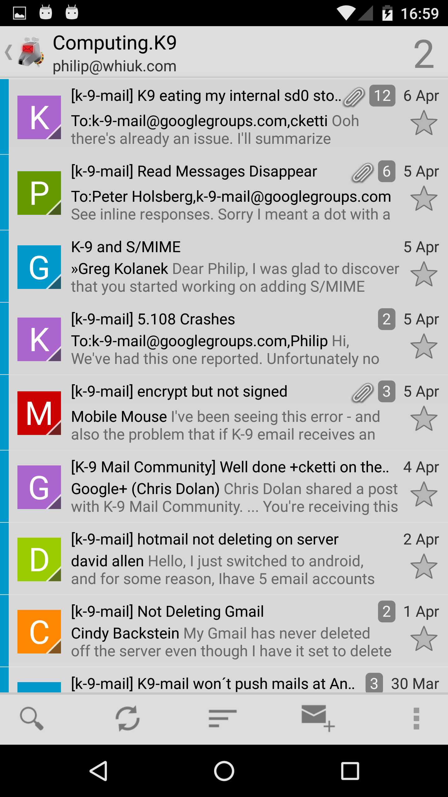
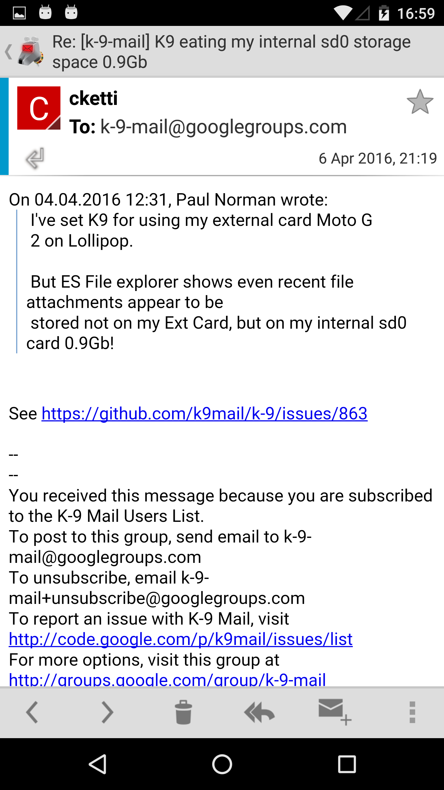

Reading E-mail
Fetching E-mail
When you receive new mail, K-9 will retrieve it (POP) or poll for it or receive a PUSH notification about it (IMAP/WebDAV). If so configured, K-9 will use the Android system notifier facility to alert you to the new messages so you can read them.
K-9 will display a notifier on the window-shade for each mailbox which has new messages. When you tap on this notifier, you will be taken to either the Folder List or the Unread Message List for that mailbox/account, depending on the setting of Account Settings->Notifications->Notification Opens Unread for that account. If you have not turned that setting on, you can tap Inbox to be taken into it.
Sync Types & K-9 Behavior
There are two ways of being notified of new mail synchronized to your device, push and poll. Push means that the server notifies you of new email. Poll means you check the server to see if new mail exists.
You can configure synchronization of each folder using Folder Classes.
You can also manually synchronize an account. This performs a poll of subscribed folders.
Various actions may perform a manual poll to ensure that the state is consistent before/after they perform the action.
('Sync' in the app generally refers to polling.)
Browsing E-mail
 
At this point, you're looking at a Message List -- a list of all (or only the unread) messages in a given folder; in this case, the Inbox folder for that email account. This list will display message titles (in bold if not yet read, highlighted if not fully down loaded), a time or date (depending on the age of the message), and either the sender's email address or "real name". It may also display a short preview of the body text of the message, a Star icon for flagging messages and/or a multi-select checkbox, if you've enabled those options in Global Settings->Display.
At this point, you can tap on a message in the list to open it for reading, or long-press to get the message's Context Menu, which contains these options, on a scrolling pop-up menu with the message's title at its top:
- Select - Select the message for group moving, copying or deleting
- Delete - Delete the message (Move it to the Trash folder [CHECKME])
- Forward - Forward the message by email
- Reply All - Compose a reply to the sender and all other recipients
- Reply - Compose a reply only to the sender
- Send Again - Attempt to send this message again (usually used from the Sent folder)
- Mark as Unread - Unset the Message Read flag
- Add Star - Mark the message as 'special' (\Flagged in IMAP, for example)
- Archive - Archive the message (by moving it to the Archive folder CHECKME)
- Spam - Move the message to the Spam folder
- Move - present a list of folders in the current email account to which the message can be moved; do so if one is selected
- Copy - present a list of folders in the current email account to which the message can be copied; do so if one is selected
- Share - hand the message body off to the Android Sharing facility, so the user can share it with someone in some fashion other than an email forward
- More from this sender - take the user to a new Message List, showing only messages sent From the same email address as the current message
Keyboard Navigation
| Shortcut | Message List | Message Details |
|---|---|---|
| Del | delete | delete |
| Volume up | next message¹ | next message¹ |
| Volume down | prev message¹ | prev message¹ |
| Back | managed back² | managed back² |
| a | reply-all | reply-all |
| c | compose | |
| d | delete | delete |
| f | forward | forward |
| g | toggle flag | toggle flag |
| h | show keys help | show keys help |
| i | toggle sort order | |
| j | prev message | |
| k | next message | |
| m | move | move |
| n | next message | |
| p | prev message | |
| q | up-to folder list | |
| r | reply | reply |
| o | cycle sort key | |
| s | toggle selected | move-to-spam |
| u | mark as unread | mark as unread |
| v | archive | archive |
| y | copy | copy |
| shift-z | zoom in | |
| z | toggle read | zoom out |
¹ if manage volume keys is turned on
² if manage back button is turned on